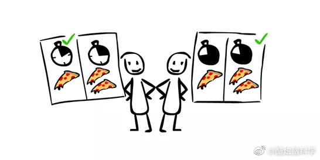

这才不是偏见。把这些钱理解成银行里要取的定期，任何人都能做出理性选择，不管时间长短，都会要多出的20%。这个题目设置，有个隐含前提是，这个钱大概率是别人给你的，那么能不能顺利拿到手，是最主要的考虑。时间是非常重要的因素，不然投资里经常讲的折现，就没有任何意义。
@酷炫脑科学:
如果你现在有两个选择
A 今天拿 1000 块钱
B 一个月之后拿 1200 块钱
你会选择哪一个？
大部分人都会选择A，然而仔细想一想，放弃 20% 的投资回报并不是一个明智的选择。
这一点在同一个问题换一个时间概念之后你就能看得更清楚。
依然是两个选择
A 一年之后拿 1000 块钱
B 十三个月之后拿 1200 块钱
这个时候，几乎所有人们都会毫不犹豫地选择多等一个月来多拿200块钱。
这是一个有趣的偏见，叫做双曲折扣( Hyperbolic discounting )。
当面临对两件事情的取舍时，我们会倾向于看重时间上离现在更近的那件事。许多学术研究表明，这个偏见在人身上根深蒂固而且阴魂不散。
A 今天拿 1000 块钱
B 一个月之后拿 1200 块钱
你会选择哪一个？
大部分人都会选择A，然而仔细想一想，放弃 20% 的投资回报并不是一个明智的选择。
这一点在同一个问题换一个时间概念之后你就能看得更清楚。
依然是两个选择
A 一年之后拿 1000 块钱
B 十三个月之后拿 1200 块钱
这个时候，几乎所有人们都会毫不犹豫地选择多等一个月来多拿200块钱。
这是一个有趣的偏见，叫做双曲折扣( Hyperbolic discounting )。
当面临对两件事情的取舍时，我们会倾向于看重时间上离现在更近的那件事。许多学术研究表明，这个偏见在人身上根深蒂固而且阴魂不散。
- 